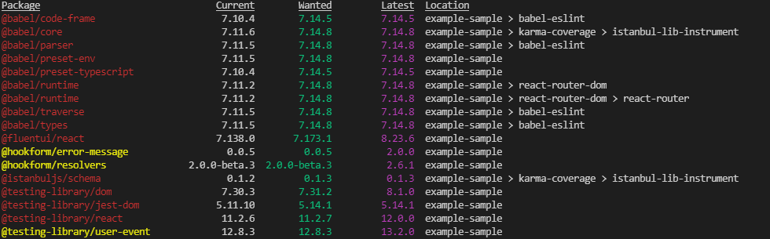

Find outdated npm packages with 'npm outdated'
(Note: you may first wish to update npm itself, see How to update npm?)
From the folder which contains your package.json file, you can find out of date local packages like this:
npm outdated
It gives very nice output, imo.

...and to ask it to look deeper, you can use for example...
npm outdated --depth 3
(In the screenshot above I've specified a depth, which is why you can see a dependency chain on the right hand side)
To look for outdated global packages, supply a -g parameter:
npm outdated -g
To update an outdated package, you can use update, or you can remove it and re-add.
npm uninstall browser-sync --save-dev
npm install browser-sync --save-dev